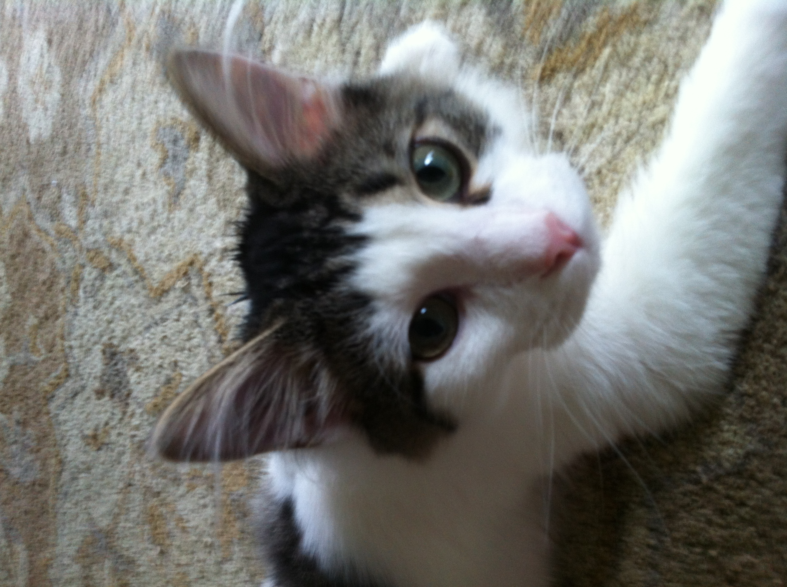

Bacon Q Dog

Bacon Q. Dog is a 9yr old labradoodle. He prefers to spend his days lounging among the three different beds/couches that his family has gifted him. He enjoys a walk or two around the neighborhood, as long as he can pretend that he doesn't see any of the other animals to avoid the embarrassment of not wanting to admit he has no wolf-like skills in chasing them.
At night just as the rest of the family is ready to relax, Bacon suddenly wants to release all of his energy. He will place his toys on a mini couch and frantically drag the couch around, giving his toys "a ride." There is also a lot of rolling. Lots and lots of rolling.
Photo Gallery


Likes
- Belly rubs
- Playing tug-of-war
- Sneaking onto the couch
Cheeto (Chicken)

Cheeto is a cat who likes to eat a lot and play a lot. He has an obsession with his grandpa (human) and tries to get outside every single day. If he isn’t causing problems, he is usually hiding in a seven-foot-tall cat tree and sleeping.
Another name for Cheeto is Chicken, because sometimes he sits very scrunched up and ends up looking like a rotisserie chicken. He was nicknamed this by one of his friends, and now he understands it as his own name. He is about six years old and still acts like a younger cat, despite being middle-aged.
Photo Gallery


Likes
- Treats
- Exploring
- My Dad
Happy
Happy is an old cat. He spends a lot of his day lounging around, in whatever spot he feels is most comfortable at the time. He is an indoor cat, but whenever we open the door to let the dogs out, he always comes running out so he can eat grass.
Happy is pretty friendly with one of my dogs, Katie. They do not interact much, but when they do, it is usually just friendly sniffs. My other dog, Izzy, however, loves biting at Happy. Happy usually will just run away, but sometimes he will retaliate by giving Izzy a smack! It is all in good fun though.
Photo Gallery


Likes
- Catnip
- Pets
- Sleeping
Molly

Molly is an 18 year old calico cat. She prefers spending her days lounging on the couch or curled up sleeping over a vent (or anything warm). Occasionally, she will go outside and attempt to hunt birds or rats (sometimes successful which is terrifying).
Her favorite habit is to brush against our legs, especially during dinner when everyone is seated around a table. She is an attention seeker, always meowing to get as many pets and head rubs as she possibly can.
Photo Gallery


Likes
- Scratching couches
- Sunbathing
- Scratching against my legs
Luke
Luke is a six-year-old white cat; he is very energetic and likes to play fetch. Luke has one brother named Jesse. Luke loves chicken cat treats, they are her favorite.
Luke is very badly behaved. He often jumps up on furniture and drinks out of our water glasses. He also steals jewelry and hides it in his bed. Luke knows several commands; he can sit, jump, follow, play fetch, and give people his paw.
Photo Gallery


Likes
- Salmon
- Playing fetch with hair ties.
- Sleeping in laundry baskets